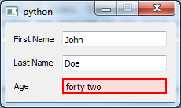

Person tutorial¶
This tutorial expands on the “Hello World” Tutorial to introduce the concepts of reusable component declarations and components from the standard widget library in Enaml. It sets up a GUI with the name and age of a person.
Here is the Enaml file (download here):
#------------------------------------------------------------------------------
# Copyright (c) 2013, Nucleic Development Team.
#
# Distributed under the terms of the Modified BSD License.
#
# The full license is in the file COPYING.txt, distributed with this software.
#------------------------------------------------------------------------------
from enaml.widgets.api import Window, Label, Field, Form
from enaml.stdlib.fields import IntField
enamldef PersonForm(Form):
attr person
Label:
text = 'First Name'
Field:
text := person.first_name
Label:
text = 'Last Name'
Field:
text := person.last_name
Label:
text = 'Age'
IntField:
minimum = 0
value := person.age
enamldef PersonView(Window):
attr person
PersonForm:
person := parent.person
Here is the Python code (download here):
#------------------------------------------------------------------------------
# Copyright (c) 2013, Nucleic Development Team.
#
# Distributed under the terms of the Modified BSD License.
#
# The full license is in the file COPYING.txt, distributed with this software.
#------------------------------------------------------------------------------
from atom.api import Atom, Unicode, Range, Bool, observe
import enaml
from enaml.qt.qt_application import QtApplication
class Person(Atom):
""" A simple class representing a person object.
"""
last_name = Unicode()
first_name = Unicode()
age = Range(low=0)
debug = Bool(False)
@observe('age')
def debug_print(self, change):
""" Prints out a debug message whenever the person's age changes.
"""
if self.debug:
templ = "{first} {last} is {age} years old."
s = templ.format(
first=self.first_name, last=self.last_name, age=self.age,
)
print s
if __name__ == '__main__':
with enaml.imports():
from person_view import PersonView
john = Person(first_name='John', last_name='Doe', age=42)
john.debug = True
app = QtApplication()
view = PersonView(person=john)
view.show()
app.start()
The resulting GUI looks like this (on Windows 7):

Enaml Imports¶
This .enaml file begins like the “Hello World” example with comments, but next we see that we can import other .enaml files in Enaml, just like we can import .py files.:
from enaml.stdlib.fields import IntField
In this case, we are importing the integer field widget IntField from Enaml’s standard widget library. This widget lets us assign an integer to the value attribute of the widget. The widget automatically converts to and from the text representation of the integer complete with validation and error checking.
Note that this import points to a widget definition in an .enaml file. The import statement looks like Python but imports from an .enaml file.
PersonForm Definition Block¶
Next, there is a component definition block. We define a component, in this case an entry form, using a component hierarchy definition. With this block of code, we define a reusable component derived from other components.
enamldef PersonForm(Form):
attr person
Label:
text = 'First Name'
Field:
text := person.first_name
Label:
text = 'Last Name'
Field:
text := person.last_name
Label:
text = 'Age'
IntField:
minimum = 0
value := person.age
A component definition block header line begins with enamldef followed by the name of the component followed by the base component or widget from which it inherits. A widget defined with enamldef must inherit from a builtin widget or another enamldef. The header line ends with a colon:
enamldef PersonForm(Form):
Indented under the header line are statements declaring either attributes or children. attr person declares a person attribute of PersonForm. Because no default value is specified, this attribute must be supplied by code which uses the PersonForm.
Built-in Components¶
Next, we add a series of labels and fields. Form, Label and Field are all from the library of Enaml built-in widgets.
Form is a built-in container that arranges alternating child components into two columns. This is typically done in the way seen here with alternating Label and widget children, though there are no restrictions on the types of widgets which can be used. In a form with an odd number of components, the last component spans both columns.
Label is a built-in component for displaying read-only text.
Field is a built-in widget for entering a text value. Field is used as the base component for many other components that do type conversions.
Delegation Operator :=¶
In the Field code block, we notice a new operator :=. This is the delegation operator, one of the five special operators in the Enaml grammar. It sets up a two-way synchronization between the objects on the left-hand and right-hand sides. That is, changes to the value of the text field in the GUI widget are applied to the value of person.first_name, and changes to the value of person.first_name are displayed in the GUI component.
Standard Library of Derived Components¶
The IntField component is derived from Field and provides string-to-integer conversion, validation, and error reporting functions. By using the IntField component, we add validation to the GUI, as shown in the example below, where a non-integer value was entered in the age field:
PersonView Definitions Block¶
Now, with another enamldef block, we can make a view available using our previously declared PersonForm. If we wanted to, we could add PersonForm many times over in this view or any other view, but for now we’ll keep it simple. Note that we will pass a person object to the view when we create an instance of it.
enamldef PersonView(Window):
attr person
PersonForm:
person = parent.person
Now, on to the Python code.
Atom Object¶
Enaml is designed to be model framework independent and ships with a formal API for attaching to any Python model framework which provides notification of state change. However, Enaml itself is built with Atom and will work with Atom objects out of the box. The important thing to note is that the Person attribute names match the attribute names of the person object used by the PersonForm in the .enaml file.
class Person(Atom):
""" A simple class representing a person object.
"""
last_name = Unicode()
first_name = Unicode()
age = Range(low=0)
debug = Bool(False)
@observe('age')
def debug_print(self, change):
""" Prints out a debug message whenever the person's age changes.
"""
if self.debug:
templ = "{first} {last} is {age} years old."
s = templ.format(
first=self.first_name, last=self.last_name, age=self.age,
)
print s
Note that our Person class is designed to print out the name and age of the person when the age attribute changes.
Hooking up an Enaml View to an Atom Object¶
In the code block for launching the script from the command line, we create a Person object and create an application which serves it using the PersonView for the GUI:
if __name__ == '__main__':
with enaml.imports():
from person_view import PersonView
john = Person(first_name='John', last_name='Doe', age=42)
john.debug = True
app = QtApplication()
view = PersonView(person=john)
view.show()
app.start()
Running it from the command line, we see:
$ python person.py
We can then make a change in the GUI and see:
John Doe Jr. is 22 years old.